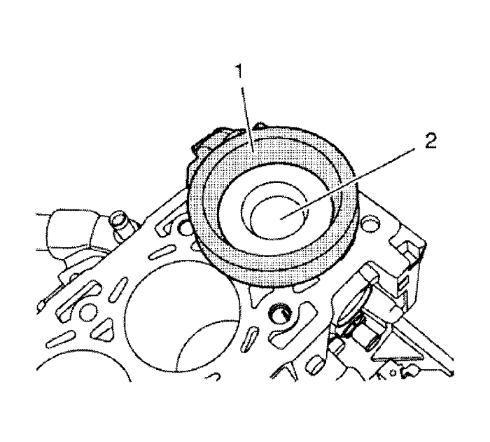
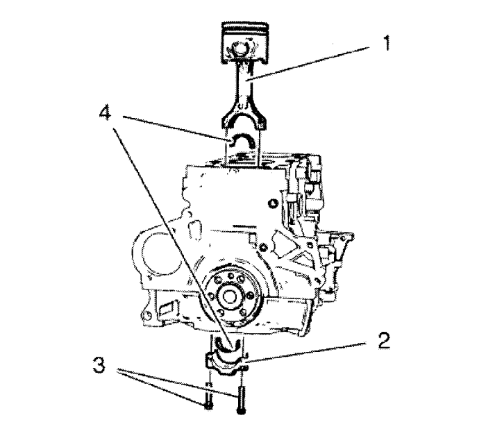

Montaje de pistón, biela y cojinete
Herramientas especiales
EN-50425 Compresor de segmentos de pistón
Si desea informarse sobre herramientas regionales equivalentes, consultar Herramientas especiales .

- Lubrique los segmentos de pistón, el pistón (2), la superficie del diámetro interior del cilindro y el compresor (1) del anillo de pistón EN-50425 con aceite de motor limpio.

- Monte los pistones con bielas (1) y empújelos hacia el bloque del motor.
- Monte los cojinetes de la biela (4) en los sombreretes de la biela (2).
Nota: Asegúrese de que no se rayen o dañen los cojinetes de biela.
- Monte el cojinete (4) de la biela.
Precaución: Consulte Precaución con las fijaciones en la sección Prólogo
- Monte los pernos del sombrerete de cojinete de biela (3) y apriételos en dos pasos:
| 5.1. | En el primer paso, apriételos a 30 N·m (22,1 lib. pie).. |
| 5.2. | En la segunda pasada, apriete a 70 grados. |
| © Copyright Chevrolet Europe. All rights reserved |